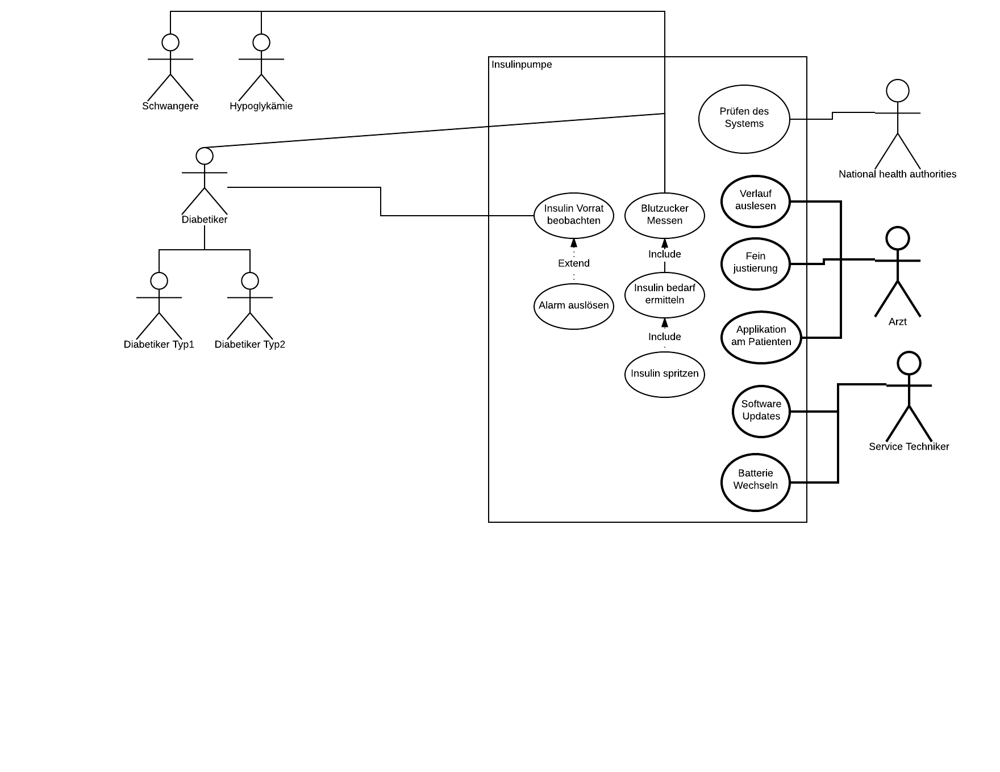

Task 01 - Elaborate Use Cases
In your team
- identify the potential users
- draw a use case diagram
- write a detailed use case scenario
Potential Users
Potenzielle Personengruppen die dieses Produkt (PIP) verwenden können
| # |
User |
Use Cases |
Bemerkung |
| 1 |
Diabetes Typ1 / Typ2 |
- Blutzucker messen
- Insulin bedarf ermitteln
- Insulin spritzen
- Insulinvorrat im Gerät beobachten
- Alarm auslösen
|
|
| 2 |
Patienten mit Hypoglykämie |
|
Kann das Gerät nur zur Messung vom Blutzucker verwenden |
| 3 |
Schwangere Frauen |
|
Kann das Gerät nur zur Messung vom Blutzucker verwenden |
| 4 |
Personen mit “Dawn-Phänomen” |
|
Kann das Gerät nur zur Messung vom Blutzucker verwenden |
Use Case Diagram
Das UseCase Diagramm einer Insulinpumpe mit seinen Akteuren

Use Case Scenarios
Das Use Case Scenario von drei ausgewählten Use Cases
Blutzucker messen
| Name |
Blutzucker messen |
| Scenario |
TODO: ergänzen |
| Actors |
User, System |
| Starting Event and Preconditions |
Entweder manuell durch Benutzer ausgelöst oder periodisch durch System, PIP ist installiert und läuft |
| Result and Postconditions |
Aktueller Messwert des Blutzuckers wurde an Steuerung übertragen, Log nachgeführt, Messwert auf Benutzerdisplay angezeigt |
Steps:
| # |
Actor |
Description |
| 1.0 |
System |
Periodische Messung auslösen |
| 1.0 |
Benutzer |
Option: Messung wird zwischen automatischen Systemmessungen durch Benutzer manuell ausgelöst |
| 2.0 |
System |
Sendet Befehl zum Auslösen der Messung an Sensor |
| 2.1 |
System |
Exception: Sensor nicht verfügbar, inkorrekt angebracht |
| 3.0 |
System |
Messwert von Sensor ermitteln |
| 3.1 |
System |
Messdaten prüfen |
| 3.2 |
System |
Exception: Messdaten nicht plausibel |
| 4.0 |
System |
Messwerte an Steuerung übermitteln, auf Display anzeigen und in Log führen |
Exceptions, Variants:
| # |
Actor |
Description |
| 2.1 |
|
Sensor nicht verfügbar, inkorrekt angebracht, Messdaten nicht plausibel |
| 2.1.1 |
System |
Fehlermeldung an Benutzer mit Angabe zum Problem, Fehler loggen, Vorgang abbrechen |
| 2.1.2 |
Benutzer |
Prüfen ob Sensor richtig angebracht wurde, Vorgang erneut starten |
| 2.1.3 |
Benutzer |
Option: Wenn Fehler weiterhin besteht, fachkundige Hilfe beiziehen |
| 3.2 |
|
Messdaten nicht plausibel |
| 3.2.1 |
System |
Erneut messen |
| 3.2.2 |
System |
Wenn Messdaten plausibel -> Vorgang fortsetzen, sonst Fehlermeldung an Benutzer |
Insulin ermitteln
| Name |
Insulin ermitteln |
| Scenario |
TODO: ergänzen |
| Actors |
System |
| Starting Event and Preconditions |
Periodisch durch System, Blutzucker wurde erfolgreich gemessen und an Steuerung weitergeleitet |
| Result and Postconditions |
Insulinbedarf wurde ermittelt |
Steps:
Exceptions, Variants:
Insulin spritzen
| Name |
Insulin spritzen |
| Scenario |
TODO: ergänzen |
| Actors |
System |
| Starting Event and Preconditions |
Berechneter Insulinbedarf ist grösser als definierter Grenzwert |
| Result and Postconditions |
Insulin in Blutbahn des Patienten injiziert |
Steps:
Exceptions, Variants: